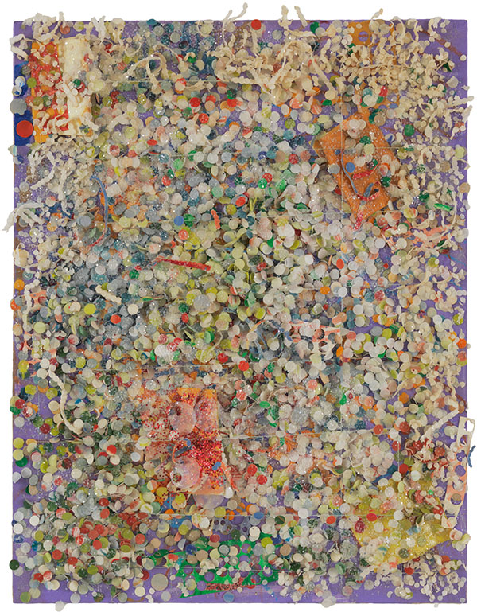

Inside but Outside
Not all African American artists during this period were apart of the Black Arts Movement. Those artists that created abstract works were often shunned because their work was not deemed political.
Paintings by Alma Thomas, Sam Gilliam, Romare Bearden will go here
Howardena Pindell, Untitled #100, 1979